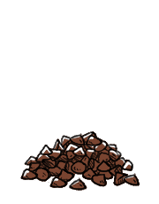

chocolate chips
Chocolate chips are small chunks of chocolate, made from roasted and ground cocoa beans. They often come in a teardrop shape, as flat discs or as square blocks. They were designed to retain their shape when baking, and therefore aren't a substitute for baking chocolate. Chocolate chips come unsweetened, semi-sweetened and sweetened.
Weight: 1 cup | 6 oz | 170 g
cocoa beans
Cocoa beans (also called cacao) are the dried and fermented seed of Theobroma cacao. The fruit, called a cacao pod, is ovoid, long and wide, ripening yellow to orange. The pod contains 20 to 60 seeds (or beans) embedded in a white pulp. Each seed contains a significant amount of fat (40–50 percent) as cocoa butter. The three main varieties of cocoa plant are Forastero (most common), Criollo (rarer, a delicacy), and Trinitario.
Its seeds are used to make chocolate liquor, cocoa solids, cocoa butter and chocolate. The fruit's active constituent is the stimulant theobromine, a compound similar to caffeine.